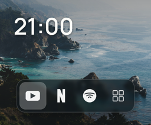
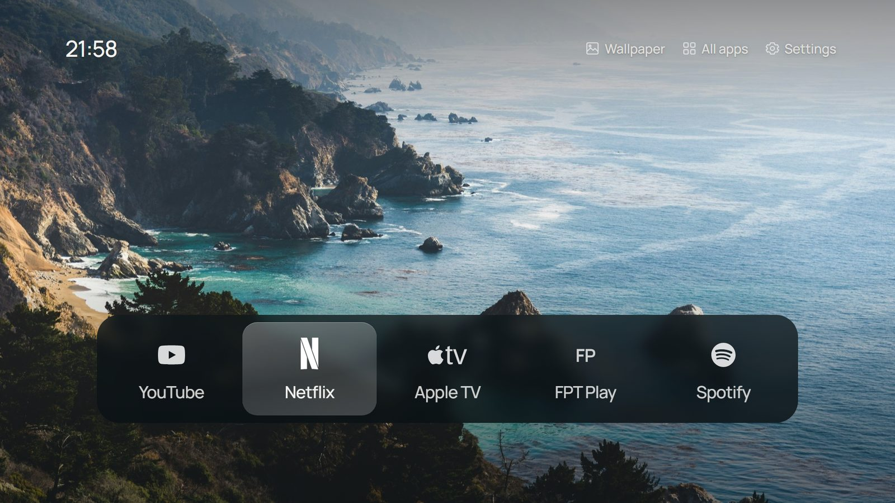
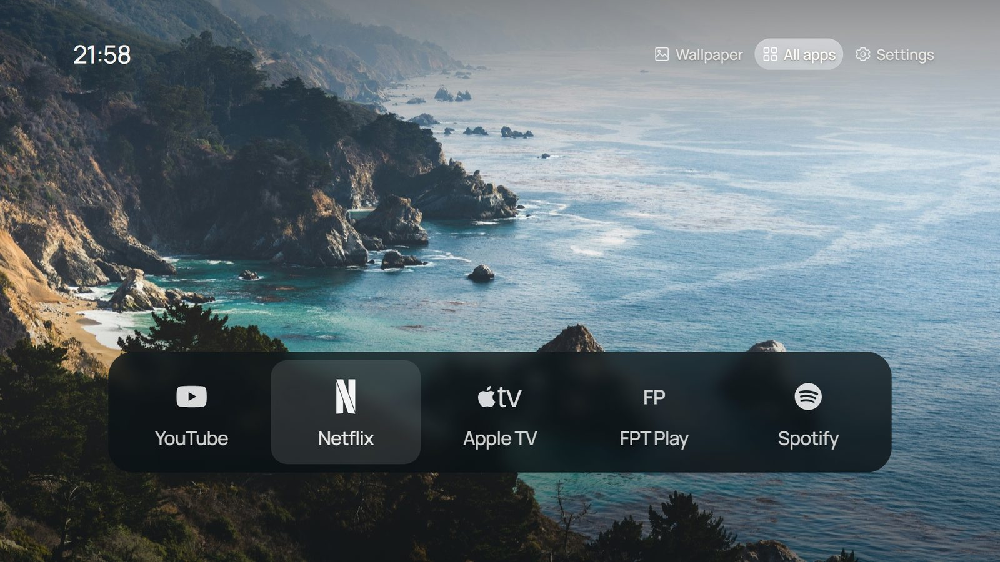

Thanh ứng dụng kính mờFrosted-glass dock
Kính mờ được dựng sẵn thành ảnh nên TV đời cũ vẫn chạy mượt, không cần hiệu ứng làm mờ trực tiếp.
The blur is pre-rendered into images, so an old TV stays smooth without live blur effects.

Tizen 3.0 Clean LauncherSamsung Smart TV · Tizen 3.0 · 2017 Samsung Smart TV · Tizen 3.0 · 2017
Ảnh phong cảnh toàn màn hình, đồng hồ 24 giờ và một thanh ứng dụng kính mờ: YouTube, Netflix, Apple TV, FPT Play, Spotify. Không quảng cáo, không banner, không gỡ bất kỳ ứng dụng hệ thống nào. A full-screen photograph, a 24-hour clock and a frosted-glass dock: YouTube, Netflix, Apple TV, FPT Play, Spotify. No ads, no banners, and no system app removed.

Smart Hub trên các TV Samsung 2017 chậm, đầy ô quảng cáo, và luôn mở trước khi bạn kịp chọn ứng dụng. Dự án này thay trải nghiệm đó bằng một màn hình chính tự viết: chỉ những ứng dụng bạn thật sự dùng, mở bằng một nút bấm trên remote.
Smart Hub on 2017 Samsung TVs is slow, full of sponsored tiles, and always gets in the way before you reach your app. This project replaces that with a self-made home screen: only the apps you actually use, one button press away.
Giao diện lấy cảm hứng (và tài nguyên ảnh, kính, biểu tượng) từ CleanFrame, được viết lại hoàn toàn để chạy trên trình duyệt WebKit đời 2017 của Tizen 3.0.
The design (and its photos, glass and icons) comes from CleanFrame, rewritten from scratch to run on Tizen 3.0's 2017-era WebKit browser engine.
Kính mờ được dựng sẵn thành ảnh nên TV đời cũ vẫn chạy mượt, không cần hiệu ứng làm mờ trực tiếp.
The blur is pre-rendered into images, so an old TV stays smooth without live blur effects.
Nút Wallpaper hoặc phím vàng trên remote đổi ảnh; lựa chọn được ghi nhớ sau khi tắt TV.
The Wallpaper control or the yellow remote key switches photos; your choice is remembered.
Hiển thị kiểu 21:05, 07:03 ở góc trên bên trái, theo giờ của TV.
Shown as 21:05, 07:03 in the top-left corner, using the TV's clock.
Khi thoát Apple TV hay FPT Play, TV thường nhảy về màn hình Samsung. Launcher phát hiện điều đó và tự hiện lại.
Apple TV and FPT Play normally drop you onto Samsung's screen when they close. The launcher notices and returns.
Trái/Phải để chọn, Lên/Xuống để chuyển giữa thanh ứng dụng và các nút góc phải, OK để mở, Return luôn ở lại màn hình chính.
Left/Right to move, Up/Down between the dock and the top-right controls, OK to open, Return always stays Home.
Chặn quảng cáo và theo dõi (ACR) bằng DNS và cài đặt của TV; mọi thay đổi đều có thể hoàn tác.
Ads and viewing-tracking (ACR) are blocked with DNS and TV settings; every change can be undone.

HTML, CSS và JavaScript ES5 thuần, không framework. Mã được viết cho WebKit 538: không biến CSS, không gap, không backdrop-filter, không font WOFF2.
Plain HTML, CSS and ES5 JavaScript, no framework. It is written for WebKit 538: no CSS variables, no gap, no backdrop-filter, no WOFF2 fonts.
TV bán lẻ chỉ cài gói đã ký bằng chứng chỉ Samsung miễn phí gắn với mã thiết bị (DUID) của chính TV đó.
Retail TVs only install packages signed with a free Samsung certificate tied to that TV's device ID (DUID).
Máy tính kết nối với TV qua Wi-Fi bằng công cụ sdb của Samsung rồi cài ứng dụng. Sau đó có thể tắt Developer Mode.
The PC talks to the TV over Wi-Fi with Samsung's sdb tool and installs the app. Developer Mode can be turned off afterwards.
Trên Tizen 3.0, lệnh mở ứng dụng thông thường không đưa được ứng dụng đang chạy nền lên trước, nên launcher dùng launchAppControl và tự thử lại nếu cần.
On Tizen 3.0 the usual launch call doesn't bring a background app to the front, so the launcher uses launchAppControl and retries when needed.
Playwright kiểm tra giao diện, điều hướng và việc mở ứng dụng trong trình duyệt; pytest kiểm tra TV thật: kết nối, bản sao lưu, DNS, và không có gói nào bị gỡ.
Playwright checks layout, navigation and launching in a browser; pytest checks the real TV: connection, backups, DNS, and that no package was removed.
sdb.exe (không cần quyền admin).sdb.exe (no admin rights needed).launcher/js/config.js, chạy npm test, rồi .\scripts\deploy.ps1.launcher/js/config.js, run npm test, then .\scripts\deploy.ps1.Hướng dẫn đầy đủ từng bước (và mọi “bẫy” đã gặp) nằm trong README.
The full step-by-step guide (and every pitfall we hit) is in the README.
Thiết kế, ảnh nền, kính mờ dựng sẵn, biểu tượng thương hiệu và font Manrope lấy từ CleanFrame của Nathan Clark (MIT). Ảnh theo giấy phép Unsplash, biểu tượng Simple Icons (CC0), Manrope (SIL OFL); chi tiết trong thư mục launcher/licenses/. Tham khảo thêm Glass Home và tizen-agent-skills của Samsung.
The design, wallpapers, pre-rendered glass, brand icons and the Manrope font come from CleanFrame by Nathan Clark (MIT). Photos are under the Unsplash License, icons from Simple Icons (CC0), Manrope under the SIL OFL; details in launcher/licenses/. Also informed by Glass Home and Samsung's tizen-agent-skills.
Mã nguồn của dự án được phát hành theo giấy phép MIT; tài nguyên của bên thứ ba giữ nguyên giấy phép gốc.
The project's code is released under the MIT licence; third-party assets keep their own terms.
Dự án cá nhân, không liên kết với Samsung, Apple hay bất kỳ dịch vụ phát trực tuyến nào. Các nhãn hiệu thuộc về chủ sở hữu tương ứng.
A personal project, not affiliated with Samsung, Apple or any streaming service. Trademarks belong to their owners.